[UIKit] UICollectionView Codebase 예제 코드
UICollectionView 코드로 구현하기
- 스토리보드로만 UICollectionView 연습을 해봤었는데 코드로 UICollectionView를 만들어보았습니다.
- ⭐️스토리보드로 CollectionView 만들기 바로가기⭐️
1. 컬렉션뷰를 담을 뷰 만들기
- UICollectionView를 담을 UIView 하나를 추가했습니다.
class ViewController: UIViewController {
var cvView: UIView = {
let view = UIView()
view.layer.borderColor = #colorLiteral(red: 0, green: 0, blue: 0, alpha: 1)
view.layer.borderWidth = 1
view.translatesAutoresizingMaskIntoConstraints = false
return view
}()
override func viewDidLoad() {
super.viewDidLoad()
view.addSubview(cvView)
setupAutoLayout()
}
// MARK: - 오토레이아웃 설정
func setupAutoLayout() {
NSLayoutConstraint.activate([
cvView.topAnchor.constraint(equalTo: view.safeAreaLayoutGuide.topAnchor, constant: 10),
cvView.leadingAnchor.constraint(equalTo: view.safeAreaLayoutGuide.leadingAnchor, constant: 10),
cvView.trailingAnchor.constraint(equalTo: view.safeAreaLayoutGuide.trailingAnchor, constant: -10),
cvView.heightAnchor.constraint(equalToConstant: 150),
])
}
}
- 실행화면 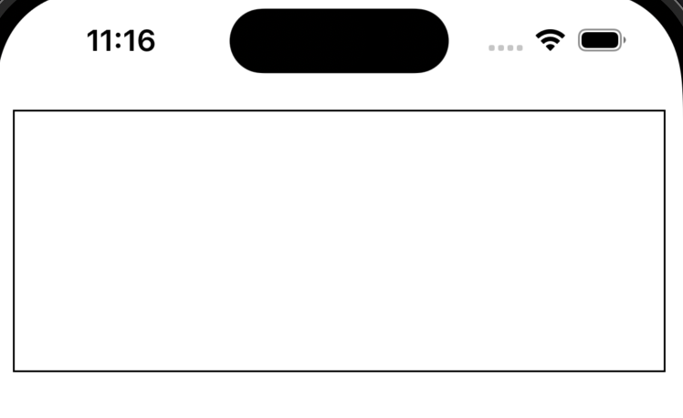
2. UICollectionView 추가하기
- TableView나 Button, Label처럼 추가 후 실행하면 에러가 발생합니다.
- UICollectionViewFlowLayout를 추가해야 에러가 발생하지 않습니다.
UICollectionViewFlowLayout 레이아웃 추가 전
class ViewController: UIViewController {
// MARK: - 컬렉션뷰
var collectionView: UICollectionView = {
let collectionView = UICollectionView()
collectionView.backgroundColor = .yellow
collectionView.layer.borderColor = #colorLiteral(red: 0, green: 0, blue: 0, alpha: 1)
collectionView.layer.borderWidth = 1
collectionView.translatesAutoresizingMaskIntoConstraints = false
return collectionView
}()
override func viewDidLoad() {
super.viewDidLoad()
view.addSubview(cvView) //뷰에 컬렉션뷰를 담을 뷰 추가
cvView.addSubview(collectionView) //컬렉션뷰를 담을 뷰에 컬렉션뷰 추가
setupAutoLayout() //오토레이아웃설정
}
// MARK: - 오토레이아웃 설정
func setupAutoLayout() {
NSLayoutConstraint.activate([
//컬렉션뷰를 담을 뷰
cvView.topAnchor.constraint(equalTo: view.safeAreaLayoutGuide.topAnchor, constant: 10),
cvView.leadingAnchor.constraint(equalTo: view.safeAreaLayoutGuide.leadingAnchor, constant: 10),
cvView.trailingAnchor.constraint(equalTo: view.safeAreaLayoutGuide.trailingAnchor, constant: -10),
cvView.heightAnchor.constraint(equalToConstant: 150),
//컬렉션뷰
collectionView.topAnchor.constraint(equalTo: cvView.topAnchor, constant: 10),
collectionView.leadingAnchor.constraint(equalTo: cvView.leadingAnchor, constant: 10),
collectionView.trailingAnchor.constraint(equalTo: cvView.trailingAnchor, constant: -10),
collectionView.bottomAnchor.constraint(equalTo: cvView.bottomAnchor, constant: -10),
])
}
}
🚨에러메시지🚨
- 컬렉션뷰는 테이블뷰와 달리 레이아웃 없이 초기화할 수 없습니다 !
- Thread 1: “UICollectionView must be initialized with a non-nil layout parameter” 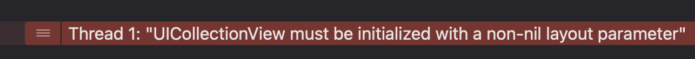
UICollectionViewFlowLayout 레이아웃 추가 후
- FlowLayout을 추가하고 다시 실행해보면 에러 없이 추가된 것을 확인할 수 있습니다.
// MARK: - 컬렉션뷰 var collectionView: UICollectionView = { let flowLayout = UICollectionViewFlowLayout() let collectionView = UICollectionView(frame: .zero, collectionViewLayout: flowLayout) collectionView.backgroundColor = .yellow collectionView.layer.borderColor = #colorLiteral(red: 0, green: 0, blue: 0, alpha: 1) collectionView.layer.borderWidth = 1 collectionView.translatesAutoresizingMaskIntoConstraints = false return collectionView }() - 실행화면 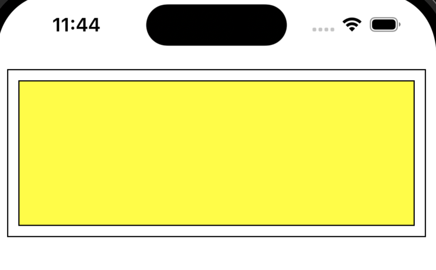
3.UICollectionViewDataSource 프로토콜 채택하기
- 테이블뷰처럼 DataSource를 채택하면 필수메서드가 필요하다고 에러가 발생합니다.
- 임의로 Return 데이터를 추가하면 테이블 뷰는 실행이되지만 컬렉션뷰는 dequeueReusableCell를 사용하지 않으면 에러가 발생합니다.
class ViewController: UIViewController { override func viewDidLoad() { super.viewDidLoad() collectionView.dataSource = self //ㄷ //다른코드 생략 } } extension ViewController: UICollectionViewDataSource { //컬렉션뷰에서 보여줄 아이템의 개수 func collectionView(_ collectionView: UICollectionView, numberOfItemsInSection section: Int) -> Int { return 10 } //컬렉션뷰의 셀에 포함할 데이터 func collectionView(_ collectionView: UICollectionView, cellForItemAt indexPath: IndexPath) -> UICollectionViewCell { return UICollectionViewCell() } }
🚨에러메시지🚨
- 컬렉션 뷰에서 셀을 반환할 때 재사용 큐에서 셀을 가져오지 않고 새로운 셀을 생성하여 반환하려고 할 때 에러 발생
- Thread 1: “the cell returned from -collectionView:cellForItemAtIndexPath: does not have a reuseIdentifier - cells must be retrieved by calling -dequeueReusableCellWithReuseIdentifier:forIndexPath:” 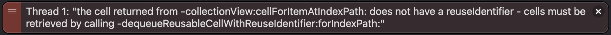
4. UICollectionViewCell를 상속받는 파일 추가
- UICollectionViewCell를 상속받는 MyCollectionViewCell 파일을 추가했습니다.
- 셀을 초기화하기위해서 init을 추가하면 required init? 메서드가 필요하다고 에러가 발생하고 required init?(coder: NSCoder)를 자동으로 추가해줍니다.
class MyCollectionViewCell: UICollectionViewCell {
override init(frame: CGRect) {
super.init(frame: frame)
}
required init?(coder: NSCoder) {
fatalError("init(coder:) has not been implemented")
}
}
MyCollectionViewCell 전체 코드
- Cell에 숫자를 보여주기위해서 Label 하나를 추가하고 오토레이아웃을 설정했습니다.
import UIKit
class MyCollectionViewCell: UICollectionViewCell {
override init(frame: CGRect) {
super.init(frame: frame)
self.backgroundColor = .white
addViews()
setupAutoLayout()
}
required init?(coder: NSCoder) {
fatalError("init(coder:) has not been implemented")
}
// MARK: - 숫자 추가
var numberLabel: UILabel = {
let label = UILabel()
return label
}()
// MARK: - 뷰에 객체 추가
func addViews() {
[numberLabel].forEach { item in
item.translatesAutoresizingMaskIntoConstraints = false
addSubview(numberLabel)
}
}
// MARK: - 오토레이아웃 설정
func setupAutoLayout() {
NSLayoutConstraint.activate([
numberLabel.centerXAnchor.constraint(equalTo: safeAreaLayoutGuide.centerXAnchor),
numberLabel.centerYAnchor.constraint(equalTo: safeAreaLayoutGuide.centerYAnchor),
])
}
}
5. ViewController에 컬렉션뷰에서 사용할 Cell 등록 및 cellForItemAt 메서드 수정
- ViewController에 컬렉션뷰에서 사용할 Cell 등록
class ViewController: UIViewController { //다른코드 생략 override func viewDidLoad() { super.viewDidLoad() //다른코드 생략 //MyCollectionViewCell 클래스를 컬렉션 뷰에 등록하고 식별자 지정 collectionView.register(MyCollectionViewCell.self, forCellWithReuseIdentifier: "MyCollectionViewCell") } //다른코드 생략 } - cellForItemAt 메서드 수정
extension ViewController: UICollectionViewDataSource { func collectionView(_ collectionView: UICollectionView, cellForItemAt indexPath: IndexPath) -> UICollectionViewCell { guard let cell = collectionView.dequeueReusableCell(withReuseIdentifier: "MyCollectionViewCell", for: indexPath) as? MyCollectionViewCell else { return UICollectionViewCell() } cell.numberLabel.text = String(indexPath.row) return cell } } - 실행화면 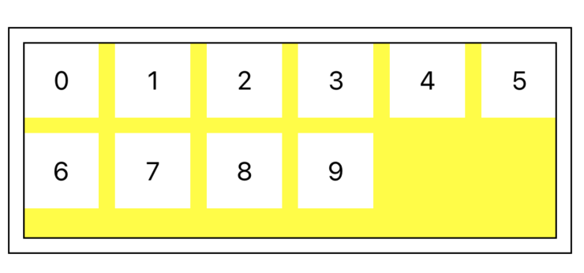
6. 컬렉션뷰 수정 전 스크롤 방향에 따른 라인의 간격과 아이템간의 간격 차이 확인
- 스크롤 방향에 따라서 최소 줄 간격과 최소항목간 간격이 변경됩니다.
- 빨간색 박스 = 라인의 범위
- 파란색 박스 = 라인의 간격 (minimumLineSpacing)
- 초록색 박스 = 아이템간의 간격 (minimumInteritemSpacing)
스크롤 방향이 vertical 일때 (기본 설정)
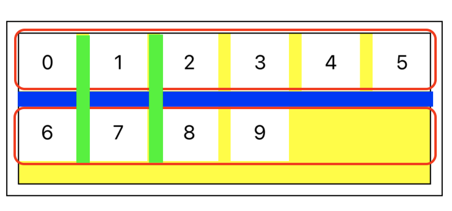
스크롤 방향이 horizontal 일때
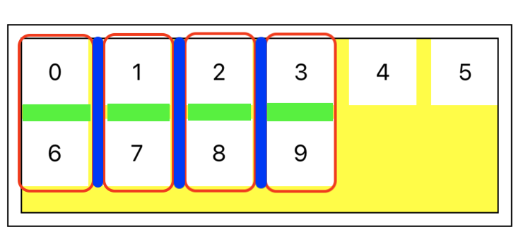
7. UICollectionViewFlowLayout 수정하기
- UICollectionViewFlowLayout를 수정해서 한 줄에 들어갈 아이템의 수와 아이템의 간격을 원하는대로 지정해보겠습니다.
1. 아이템간의 간격과 라인에 들어갈 아이템 수 지정
class ViewController: UIViewController {
let collectionViewItemSpacing: CGFloat = 5 //아이템간의 간격
let collectionViewItemCnt: CGFloat = 4 //라인에 들어갈 아이템 수
//다른 코드 생략
}
2. 컬렉션뷰 수정
- 스크롤 방향과 아이템간의 간격, 라인간의 간격을 설정합니다.
- collectionViewItemSpacing 상수의 추가로 lazy를 추가하고 collectionViewItemSpacing 상수보다 나중에 초기화 되도록 합니다.
// MARK: - 컬렉션뷰 lazy var collectionView: UICollectionView = { let flowLayout = UICollectionViewFlowLayout() flowLayout.scrollDirection = .vertical //스크롤 방향 flowLayout.minimumLineSpacing = 20 //라인 간격 flowLayout.minimumInteritemSpacing = self.collectionViewItemSpacing //아이템 간격 let collectionView = UICollectionView(frame: .zero, collectionViewLayout: flowLayout) collectionView.backgroundColor = .yellow collectionView.layer.borderColor = #colorLiteral(red: 0, green: 0, blue: 0, alpha: 1) collectionView.layer.borderWidth = 1 collectionView.translatesAutoresizingMaskIntoConstraints = false return collectionView }()
3. 컬렉션뷰 델리게이트 설정
override func viewDidLoad() {
super.viewDidLoad()
//다른코드 생략
collectionView.delegate = self
}
4. UICollectionViewDelegateFlowLayout 프로토콜 채택 및 메서드 추가
extension ViewController: UICollectionViewDelegateFlowLayout {
// MARK: - 컬렉션 뷰의 각 셀의 크기를 결정하는 메서드
func collectionView(_ collectionView: UICollectionView, layout collectionViewLayout: UICollectionViewLayout, sizeForItemAt indexPath: IndexPath) -> CGSize {
//return 값으로 원하는 크기를 지정
}
}
스크롤 방향이 vertical 일때 한 줄에 4개 만큼 아이템 넣기
- 스크롤 방향 설정
// MARK: - 컬렉션뷰 lazy var collectionView: UICollectionView = { //다른코드 생략 flowLayout.scrollDirection = .vertical //스크롤 방향 //다른코드 생략 }() - 스크롤 방향이 horizontal일때 한 줄이 width 기준
extension ViewController: UICollectionViewDelegateFlowLayout { // MARK: - 컬렉션 뷰의 각 셀의 크기를 결정하는 메서드 func collectionView(_ collectionView: UICollectionView, layout collectionViewLayout: UICollectionViewLayout, sizeForItemAt indexPath: IndexPath) -> CGSize { let width = (collectionView.bounds.width - (self.collectionViewLineWidth * (self.collectionViewItemCnt - 1))) / self.collectionViewItemCnt return CGSize(width: width, height: width) } } - 실행화면 (한 줄에 아이템 수 4, 아이템 간격 5, 라인 간격 20) 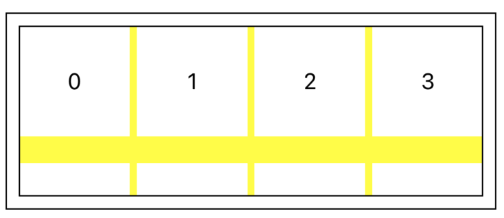
- 실행화면 (한 줄에 아이템 수 5, 아이템 간격 1, 라인 간격 10) 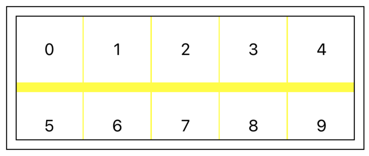
스크롤 방향이 horizontal 일때 한 줄에 4개 만큼 아이템 넣기
- 스크롤 방향 설정
// MARK: - 컬렉션뷰 lazy var collectionView: UICollectionView = { //다른코드 생략 flowLayout.scrollDirection = .horizontal //스크롤 방향 //다른코드 생략 }() - 스크롤 방향이 horizontal일때 한 줄이 height 기준
extension ViewController: UICollectionViewDelegateFlowLayout { // MARK: - 컬렉션 뷰의 각 셀의 크기를 결정하는 메서드 func collectionView(_ collectionView: UICollectionView, layout collectionViewLayout: UICollectionViewLayout, sizeForItemAt indexPath: IndexPath) -> CGSize { let width = (collectionView.bounds.height - (collectionViewItemSpacing * (collectionViewItemCnt - 1))) / collectionViewItemCnt return CGSize(width: width, height: width) } } - 실행화면 (한 줄에 아이템 수 4, 아이템 간격 5, 라인 간격 20) 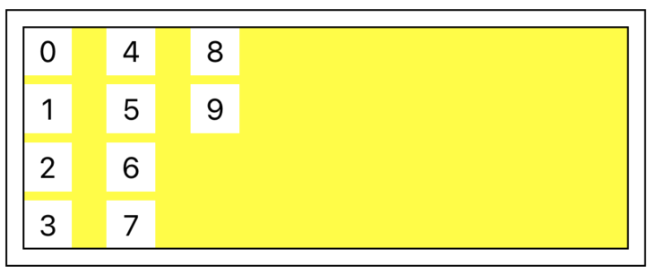
- 실행화면 (한 줄에 아이템 수 5, 아이템 간격 1, 라인 간격 10) 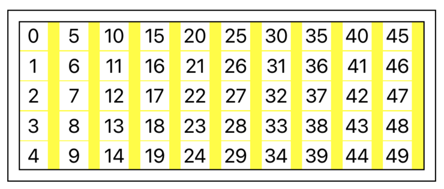
마무리
- 컬렉션뷰를 사용할때는 레이아웃 설정 필요함
- 스크롤 방향에 따라 라인이 변경됨